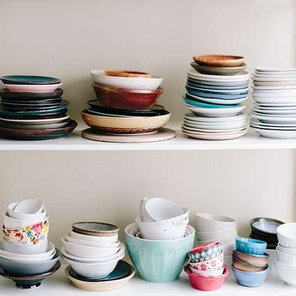

Текстовая страница
Основной текст
Стеклянный заварочный чайник "Eva" прекрасно подойдет как для заваривания чая, так и для кипячения воды, охлаждения или подогрева напитка. Сквозь прозрачное стекло вы сможете оценить цвет напитка, особенно эффектно выглядят раскрывающиеся при заваривании вязаные чаи. Стеклянные заварники удобны в уходе, отлично отмываются от накипи и не теряют свой внешний вид.
Заварник изготовлен из термостойкого закаленного боросиликатного стекла. Ручка и крышка чайника тоже стеклянные. Чайник снабжен стеклянным фильтром. Эту модель заварника можно использовать на электрических плитах, на газовой плите можно использовать только с рассекателем пламени.
Оформление списков
- Картофель, капуста, лук и морковь.
- Курица или куриные окорочка, немного свинины и (или) говядины. Свежемороженая рыба (один день в неделю стоит делать рыбным
- 1 или 2 десятка яиц.
- Кефир, молоко и сметана.
Таблица
| Характеристика | Значение | Значение | Значение |
|---|---|---|---|
| Характеристика1 | Значение1 | Значение1 | Значение1 |
| Характеристика2 | Значение2 | Значение2 | Значение2 |
| Характеристика3 | Значение3 | Значение3 | Значение3 |
| Характеристика4 | Значение4 | Значение4 | Значение4 |
| Характеристика5 | Значение5 | Значение5 | Значение5 |
| Фото | Значение | Значение | Количество |
|---|---|---|---|
|  | Значение1 | Второе Значение 1 |
|